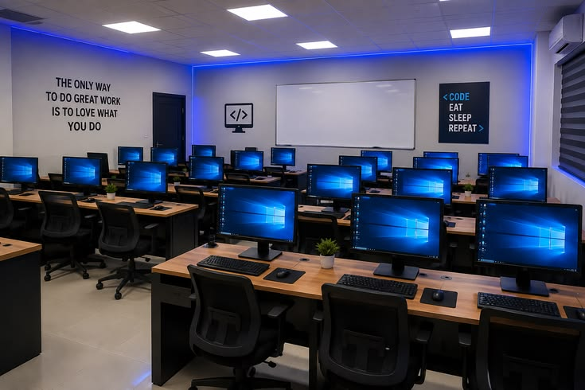

About the Department
The Department of Information Technology offers a comprehensive curriculum that trains students in the latest and modern technologies,in Software Engineering, Data Science, Cybersecurity, Networking, Machine Learning and Systems Administration. Our goal is to equip students with practical industry-relavant computing skills through a hands-on and self-directed learning approach.

Courses Offered
- Software Engineering
- Data Science
- Cybersecurity
- CCNA
- Machine Learning
- Web Development
Welcome
The Department of Technology and Analytics trains students in software development, networking, data analysis, and systems administration. Our mission is to equip learners with practical, industry-relevant computing skills through hands-on coursework and modern laboratories.
TeamWork Forum
We have an active and user-friendly, with a paid subscription for the Cybersecurity members, Forum for students to engage in challenges.
Extra Resources
We also have a Discord server for students to discuss and share ideas on technology and analytics. And a mattersmost channel that is peer-peer teaching to enhance teamwork and carryout group discussions.